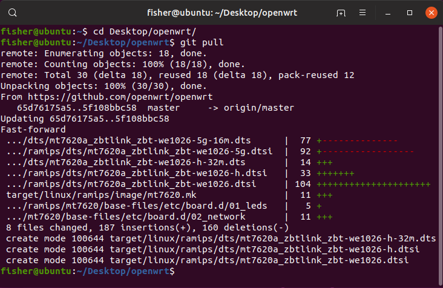
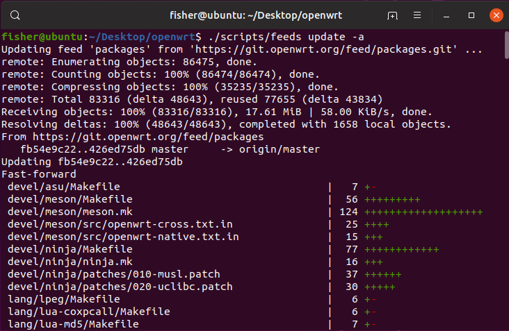
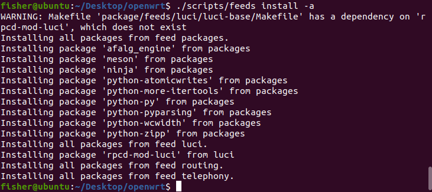
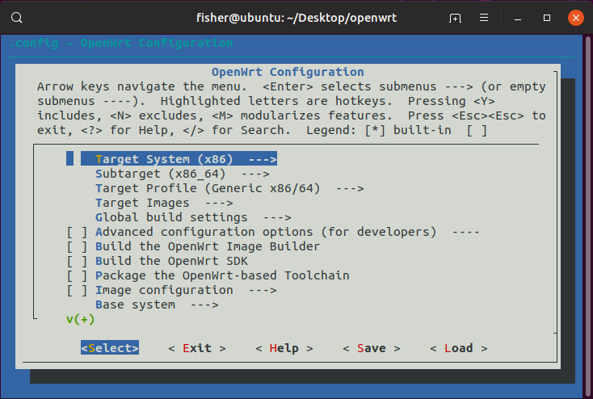
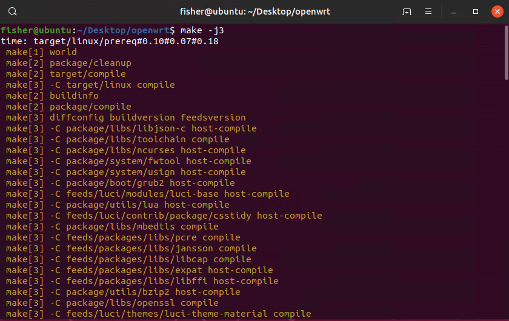
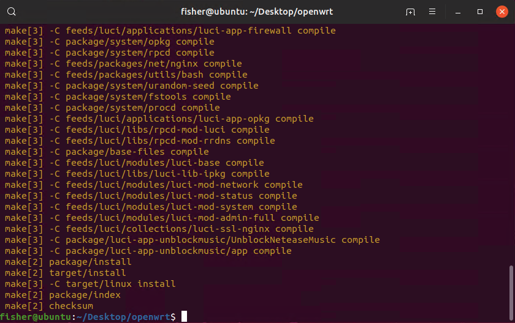
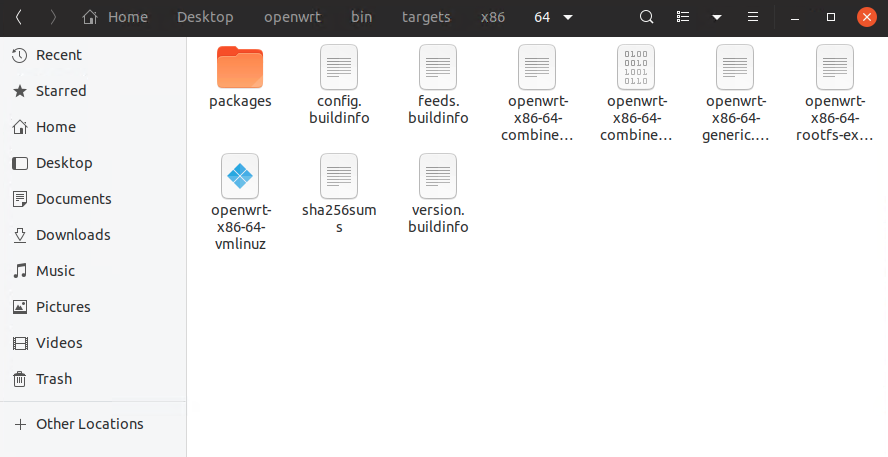

前言
“你们为什么不自己去尝试编译一个OpenWrt研究一下呢？”
在操作系统课上，刘刚不止一次讲了这句话了。其实我之前给路由器刷过OpenWrt固件，但是编译还真没试过。恰好我对此也有兴趣，于是说干就干，自己编译一个OpenWrt固件！
前期准备
系统环境：Ubuntu 19.04 64-bit
安装依赖
1 | sudo apt install subversion g++ zlib1g-dev build-essential git python python3 |
获取OpenWrt源码
OpenWrt官方也有一个Git仓库，但是国内的网络使用比较慢，因此我们使用GitHub上来自官方的镜像仓库
1 | git clone https://github.com/openwrt/openwrt.git |
之后需要更新源码的时候，只需要使用Git的命令即可
1 | git pull |

更新依赖包
在每次编译之前我们需要将依赖包更新一下，以保证编译到固件中的软件包是最新版的
1 | cd openwrt |


编译配置
在正式编译之前，我们需要修改编译的配置文件，以指定编译的目标平台、架构、需要的系统软件包、固件的格式。在OpenWrt的编译配置中，我们使用图形化的编译配置make menuconfig
1 | make menuconfig |
此时终端会出现一个如下图的界面

在这个界面就可以配置出自己想要的固件，我的配置如下：
- Target System => x86 (目标系统架构)
- Subtarget => x86_64 (目标CPU类型)
- Target Profile => Generic x86/64 (目标设备)
剩下的配置就是编译出的固件格式，系统环境依赖包，LuCi依赖包等等。可以根据自己的需要灵活选择。在选择完成之后保存配置文件，就可以开始编译了
正式编译
第一次编译的时候，Openwrt并不推荐使用多线程编译，因为编译过程中需要下载比较多的软件包。因此第一次编译我只添加了输出编译日志的参数
1 | make V=99 |
第一次编译完成之后，在以后的编译中就可以使用多线程编译了，具体线程数需要看CPU的核心数。因为使用的进程数量是-j参数中的数字+1，而我给虚拟机分配的CPU核心数有4个，因此我的参数是-j3
1 | make -j3 V=99 |
在网络通畅的情况下，第一次编译需要的时间比较长，我用了一个下午😂。后面加入多线程编译后只需要20分钟就编译完了


编译完成后的固件在文件夹中的bin/target中，编译好的依赖包在bin/packages中，以后可以做一个镜像站代替官方的opkg依赖源

需要重新编译的时候，先进行make clean清理之前编译好的固件，再执行make重新编译